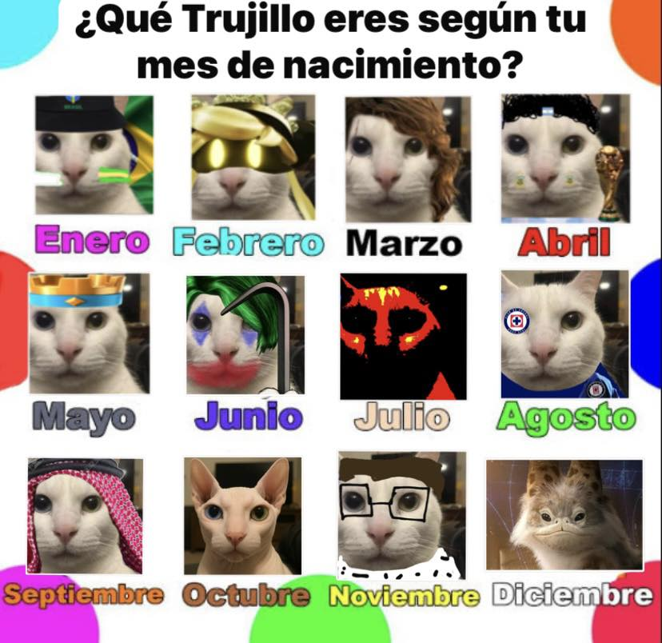
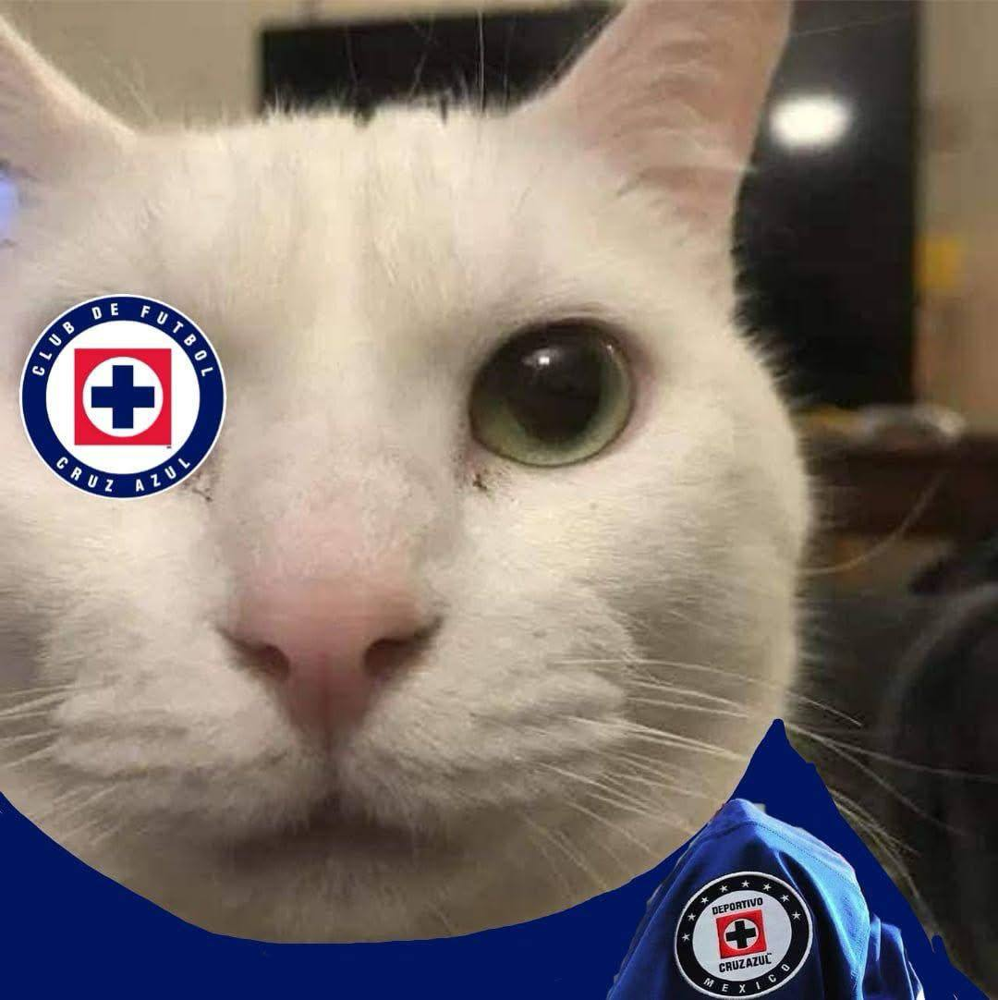
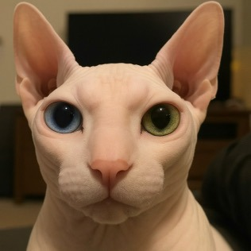

Calendario Trujillo :V

Calendario Trujillo 2025
Jose Armandiho Brasilero Guzman (Enero)
Jose Armando Cynillo Guzman (Febrero)
Jose Armando Trujillo Skywito (Marzo)
Jose Armando Maradona Guzmán (Abril)
Jose Armando Trujillo Guzman Clashero (Mayo)
Jose Armando Guasonillo Guzman (Junio)
Jøse Årmando Malvadīllø Guzmán (Julio)
Jose Armando Trujillo Sementero (Agosto)

خوسيه ارماندو تروخيو جوزمان (Septiembre)
José Armando Calvillo Guzman (Octubre)

Jose Apm (Diciembre)

José Armando Trujillo Guzmán Star Wars (Diciembre)
Todavia no esta terminado el calendario